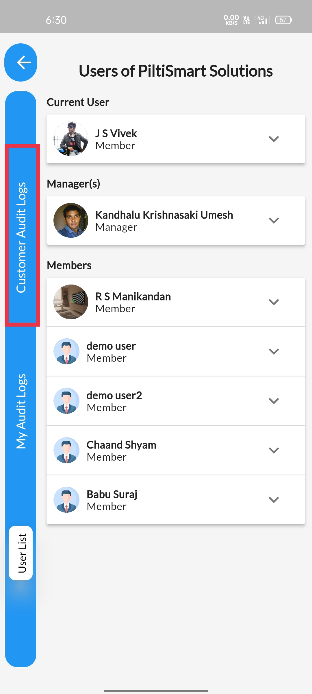
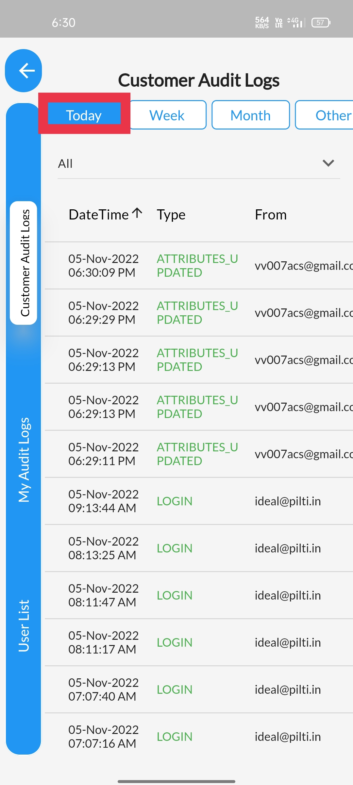
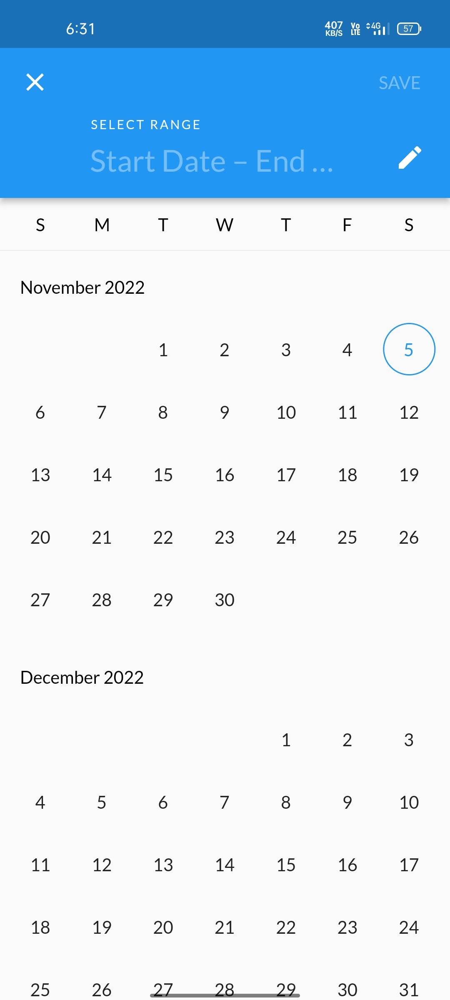

STEP 1Click on the top Left corner Menu Button, Dashboard will be Revealed |
 |
STEP 2Next click the Users Button available in the Dashboard. |
 |
STEP 3Click on CustomerAuditLog displayed in the side panel. |
 |
STEP 4"Today" section displays "Today" telemetry entries. |
|  |
STEP 5"Week" section displays "Week-wise" telemetry entries. |
 |
STEP 6"Month" section displays "Month-wise" telemetry entries.
|
 |
STEP 7Other section allows you to navigate to a specific Date to obtain the telemetry entries. |
 |
STEP 8Date panel is displayed for Date navigation. |
|  |